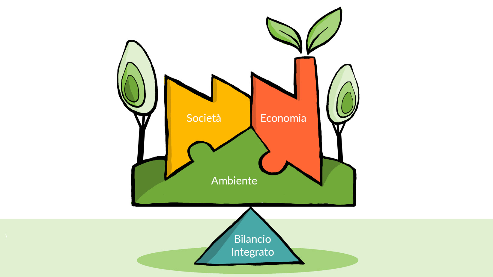
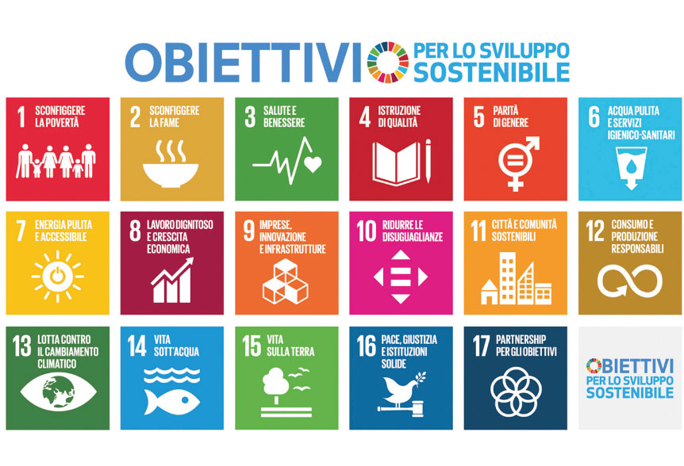
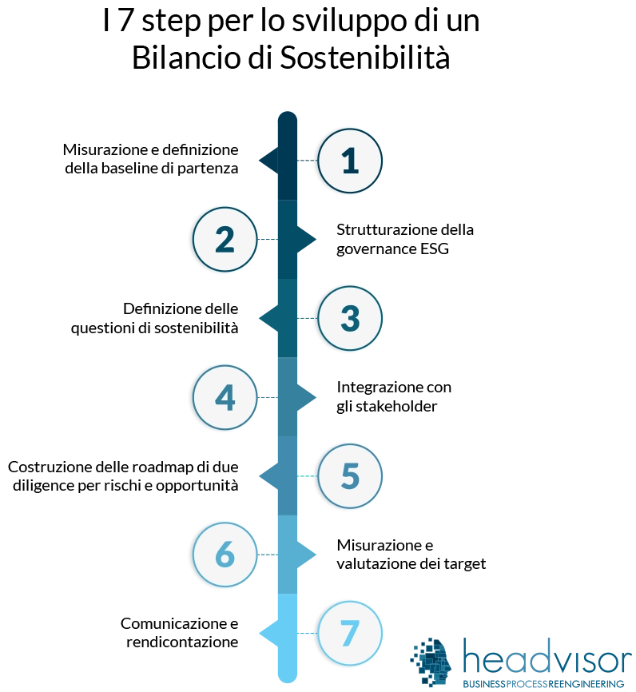
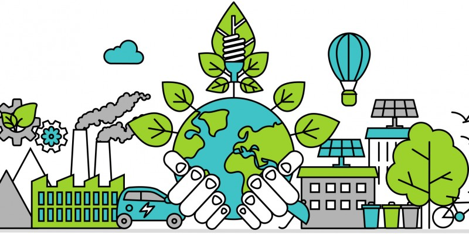
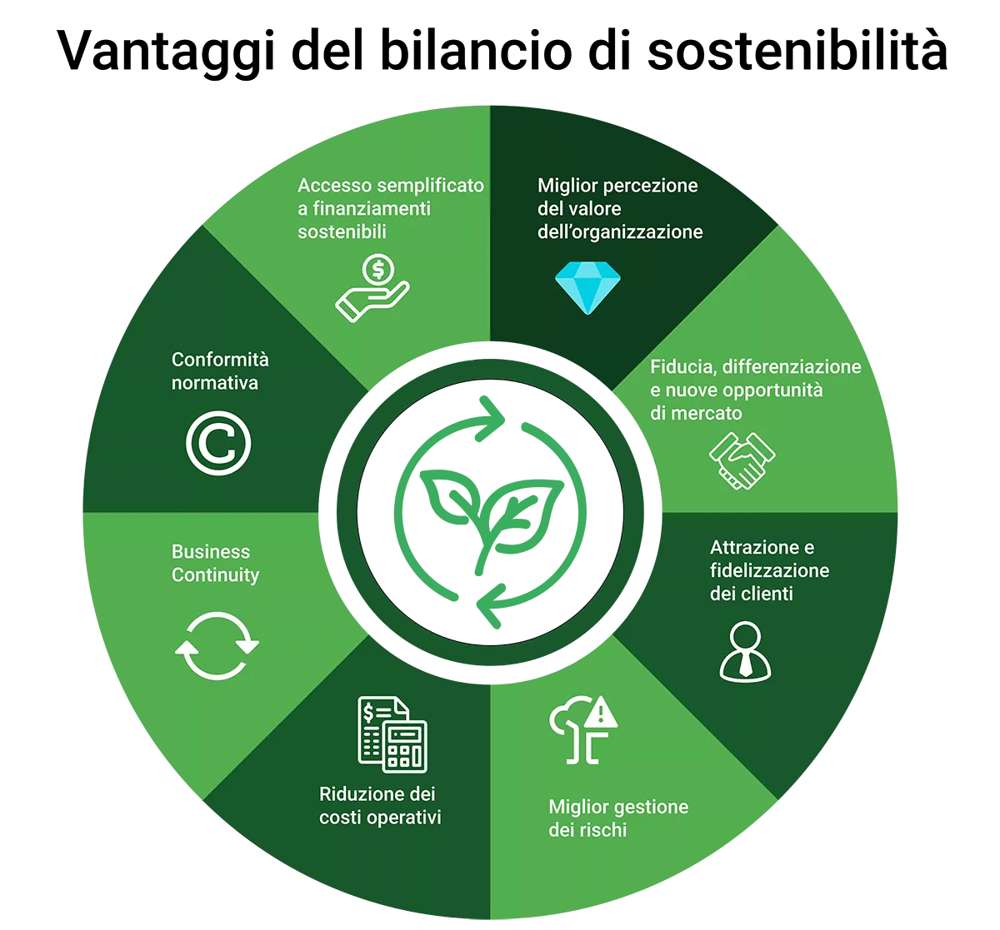

Introduzione
Il bilancio sostenibile è uno strumento fondamentale per comunicare l’impegno di un’impresa verso la responsabilità sociale, ambientale ed economica. Oltre ai risultati economici, considera l’impatto sulle persone e sull’ambiente.
Obiettivi del Bilancio Sostenibile
L'obiettivo è fornire informazioni trasparenti agli stakeholder (dipendenti, investitori, clienti, comunità) sulle politiche ambientali e sociali adottate dall’impresa. Aiuta a prendere decisioni consapevoli e rafforza la fiducia.
Struttura e Contenuti
Un bilancio sostenibile si compone solitamente di tre parti: la relazione economica, la parte ambientale (emissioni, consumo di risorse), e quella sociale (diritti dei lavoratori, parità di genere). Ogni sezione è integrata nel bilancio d’impresa.
Esempi di Imprese Sostenibili
Molte aziende come Patagonia, IKEA e Unilever pubblicano regolarmente bilanci di sostenibilità, dimostrando l’impatto positivo delle loro scelte su ambiente e società. Questi esempi ispirano altre imprese a seguire lo stesso modello.
Conclusione
Il bilancio sostenibile è uno strumento strategico per lo sviluppo duraturo e responsabile delle imprese. Contribuisce a una visione moderna del business, in cui l’etica e l’ambiente sono parte integrante del successo economico.
